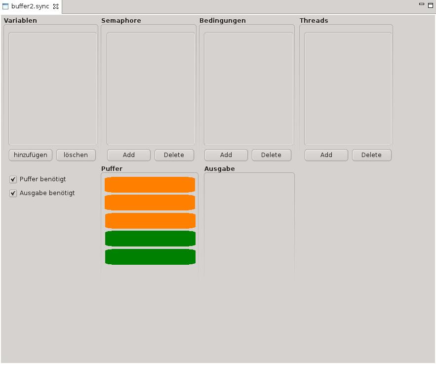

Scenario Editor
Der Scenario Editor ermöglicht es dem Benutzer ein Beispiel zu definieren, auf dem der
Run ausgeführt wird.
Aufbau des Editors und definieren eines Beispiels
Wenn der Benutzer eine neue Scenario Datei (ein neues Beispiel) anlegt, wird diese
automatisch im Scenario Editor geöffnet. Zu Beginn ist das Scenario leer.

Abbildung des leeren Editors
Der Editor bietet die Möglichkeit, durch einen Klick über einen Assistenten
dem Scenario verschiedene Datentypen hinzuzufügen. Die Datentypen primitive Variable
(Integer und Boolean), Semaphor, Bedingungsvariable und Prozess werden in vier nebeneinander
liegenden Feldern verwaltet. Durch einen Klick auf "hinzufügen" kann der Benutzer
Datentypen dem Scenario hinzufügen, wobei er vom einem Assistenten unterstützt
wird.

Assistent zum Hinzufügen einer Variablen
Nach dem Hinzufügen einer oder mehrere Variablen werden diese im jeweiligen Bereich angezeigt.

Ansicht der Editors nach Hinzufügen von Variablen
Über den Button "löschen" lassen sich Datentypen wieder aus dem Beispiel löschen.
Ein Klick auf den Button öffnet einen Dialog, der eine Liste mit Mehrfachauswahl anbietet. Die
zu Löschenden Datentypen werden durch einen Klick (bei Mehrfachauswahl STRG-Taste drücken)
markiert, ein Klick auf "OK" löscht diese. Mit "Abbrechen" lässt sich das Löschen
zu diesem Zeitpunkt noch abbrechen.
Bild machen und einfügen
Es gibt auch Beispiele, die eine Möglichkeit zur Ausgabe eines Textes oder das Nutzen eines
Puffers erfordern. Beides kann dem Beispiel über die Checkboxen im unteren Teil gesteuert werden.
Wird die Checkbox "Puffer benötigt" aktiviert, so öffnet sich ein Assistent, der den
Benutzer nach der Anzahl der gewüschten Plätze fragt und anschließend der Pufferbereich
im Beispiel sichtbar gemacht. Wird der Puffer doch nicht benötigt wird er durch Deaktivieren der
Checkbox aus dem Beispiel gelöscht. Die Visualisierung verwendet orange Labels falls der Platz
belegt ist, eine freier Platz erscheint in grün.
Die Möglichkeit zur Ausgabe erfordert keine weitere
Konfiguration, ein Aktivieren der entsprechnenden Checkbox macht sofort den Ausgabebereich sichtbar,
ein Deaktivieren lässt ihn verschwinden.

Ansicht der Editors nach Hinzufügen von Puffer und Ausgabe